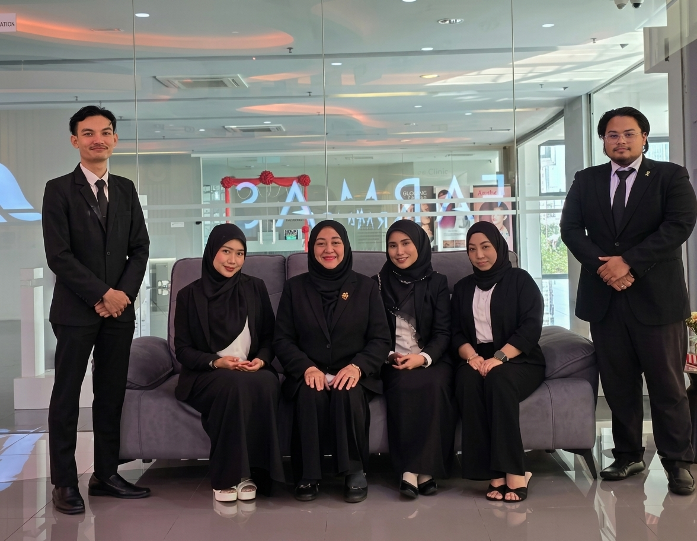
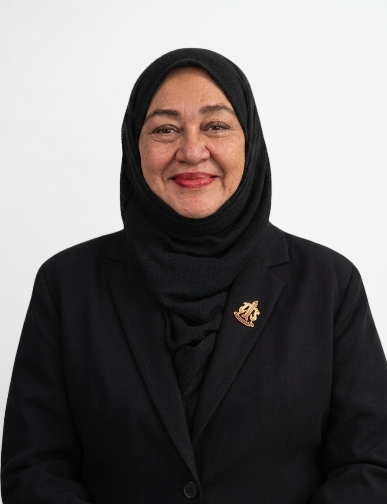

A modern path to a timeless obligation.
Al-Aman is the Islamic legacy planning arm of DWS2U — bringing decades of experience into the digital age, so Muslim families across Malaysia can fulfil an important duty with ease and dignity.
Bringing legacy planning into the modern age.
Al-Aman began with a simple, tender observation: too many Muslim families delay writing their Wasiat — not out of neglect, but because the process felt overwhelming, costly, or out of reach. Yet this responsibility is one of the most caring things a person can attend to.
Drawing on DWS2U's heritage in legacy planning, and working alongside Global Asset Trustee — a professional trustee serving families since 1997 — we built Al-Aman as a dedicated Shariah-compliant platform. It is guided by a qualified Shariah advisory team, powered by warm and simple technology, and built on one belief: every Muslim family deserves to fulfil this duty with confidence and peace of mind.
"To safeguard is to honour the trust placed in us."— The Al-Aman Promise

In Arabic, Al-Aman means peace, security, safety, and trust. It shares its root with amanah — a sacred trust placed in our care. That is exactly what we promise: to safeguard your wishes and carry them faithfully to those who matter most. Every Wasiat written and every Hibah granted through Al-Aman is, at heart, a promise kept.
What we stand for.
Amanah
Trust is the foundation of every relationship we hold — with the families we serve and the advisors who guide us.
Ihsan
We pursue excellence in every detail, from Shariah review to the smallest kindness in your experience.
Adl
Fairness guides every Wasiat, every Hibah, every distribution.
Hikmah
We blend Islamic principles with thoughtful technology to serve you better.
A foundation of experience.
Al-Aman is built on the heritage of Global Asset Trustee — a professional trustee serving Malaysian families since 1997.
Al-Aman is part of Global Asset Trustee (M) Berhad, a professional trustee that has quietly served Malaysian families since 1997. For nearly three decades, they've been the people families turn to for one of life's most sensitive tasks — making sure what's left behind reaches the right hands, in the right way.
That heritage is Al-Aman's foundation. Every Wasiat and Hibah you create with us carries that experience — and comes with an experienced Professional Executor, at no additional cost.
Faith and framework, in careful hands.
A panel of qualified Shariah advisors stands behind every Wasiat and Hibah created through Al-Aman.
Every Wasiat and Hibah on Al-Aman is grounded in the framework designed and overseen by Sarah Ali & Co — an established Malaysian firm with 15+ years of practice in Syariah law and Islamic estate matters. They are our appointed Shariah panel, and their guidance shapes every recommendation we give.

The professional team at Sarah Ali & Co, Kuala Lumpur.

Called to the Malaysian Bar in 1998. Holds an L.L.M in Administration of Islamic Law and a Postgraduate Diploma in Syariah & Legal Practice from IIUM, with Syariah practising certificates across Wilayah Persekutuan, Selangor, Negeri Sembilan, Perak, and Melaka. Currently serves on the Malaysian Bar Council Syariah Committee (2025–2026).
Ready to take the first step?
Join the growing community of families planning their legacy with Al-Aman.
Get Started